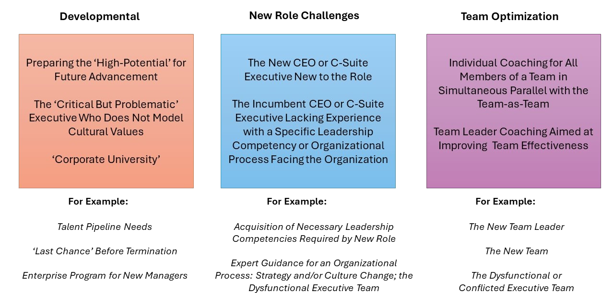

Executive Assessment
Chris has been doing assessments of one kind or another for over 40 years. His initial training as a psychologist gave him a good understanding of the basic ingredients necessary for a reliable and valid assessment of people. He has created several assessment instruments (leadership competency, 360, team and organizational assessment). His Dawson 360 tool is psychometrically valid and reliable, as well as fully automated in the cloud.
Professional assessment should be distinguished from ‘amateur’ assessment (even if well-intended). Everyone has a persona they wish to project; executives tend to be confident, ambitious and in-control. Seeing past the ‘story’ takes considerable training and skill. You don’t need to be a psychologist to do professional assessment, but you do need to have training and supervised experience in doing assessments. There are no ‘naturals’ in this field.
It is imperative to use both quantitative and qualitative tools and methods. As well as to know how best to report findings of the assessment.
- Quantitative Tools we use:
- The Hogan Leadership Suite (HPI, HDI, MVPI) is the universally acclaimed best practice tool for measuring traits which are stable over time.
- The Wonderlic is a powerful measure of cognitive ability that correlates highly with lengthier and tedious several hour traditional IQ testing. It is a 12-minute written test.
- For Developmental Assessments we often include a multi-source 360; our own valid and reliable instrument or the Company’s if done recently.
- Qualitative tools include the Behavioral Competency Interview which seeks concrete behavioral examples from the interviewee’s life experiences.
- A 2-3 hour live interview (Zoom or In-Person) provides more than enough raw data to both clearly native strengths and shortcomings, but also to test for the presence of specific competencies required by the new position, career aspirations, and other more specific competencies related to organizational culture.
- Brief 30’ interviews with peers, subordinates and superior in the case of developmental assessments.
We generally produce a written report that outlines key strengths, development areas and depending on application a discussion of fit/risk areas or practical recommendations for the interviewee and their manager about how to action the recommendations. For developmental assessments, it is common to have both an individual feedback session for interviewee and manager, in addition to a 3-way discussion of findings facilitated by Chris. Sometimes the summary data is not what the interviewee was expecting or wanting to hear. Managing this challenge requires courage, skill and sensitivity. The goal is always to be constructive and helpful – irrespective of whether the interviewee sees it in the same way. Some need to be approached explicitly and directly; others need softening so as not to be demotivating, and everywhere in between. How this is done both in writing and verbally in live feedback is an art that Chris has 35 years experience with.
Our basic professional assessment process has three distinctly different applications: Developmental, Pre-Hire Candidate Fit and Team Development:

The Developmental Assessment is aimed at Talent Management, Succession Planning and Career Development. A special application can be the Hi-Value Problem Executive – an executive offering exceptional value and perhaps ‘indispensable’ who routinely exhibits serious problem behaviors. Often this individual has been counseled but to no avail. Our Developmental Assessment with 360 has never once failed to create the proverbial wake-up call for such executives. It is difficult to deny factual empirical data about how one is viewed when presented fairly by an credible expert, in detail and with explanation of the cost to overall effectiveness, future career, and perhaps continued employment.
The Pre-Hire Candidate Fit Assessment is inexpensive risk mitigation before hiring an executive who, should they not succeed – through fault of their own or their new team – has a very high cost. We meet with the hiring manager or stakeholders prior to the interview with the goal of understanding the requirements for the job, the organizational culture, and the personality of the hiring manager. Rarely is a candidate without some areas of less-good fit but identifying those risk areas and naming them with recommended solutions can make the difference between success and failure. In many cases, the newly-hired candidate continues a brief On-Boarding coaching with Dawson if this is deemed valuable.
The Team Assessment is often a prelude to Chris’ work with a team that is not functioning at the level they must to be successful. Individual Assessments are performed along with various team measures to better understand how the ‘team molecule’ is composed and where predictable areas of conflict and misunderstanding likely arise.